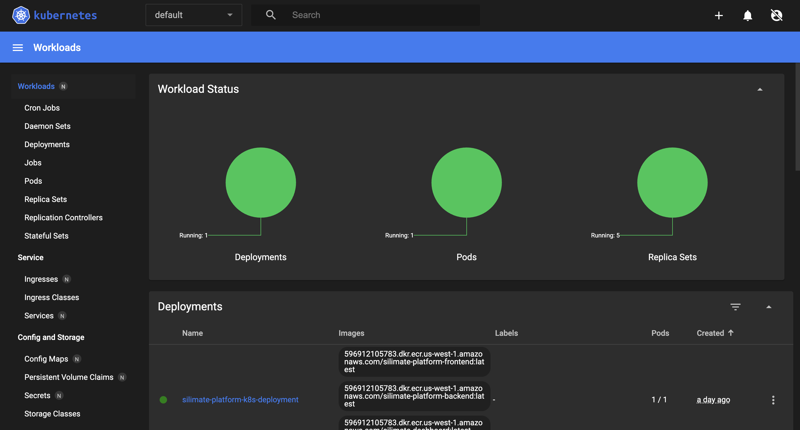

Architecture
Silimate Platform is built on Kubernetes (K8s) and Docker Engine. The platform is composed of a few microservice containers that are pulled from Silimate's Docker repository on AWS Elastic Container Repository (ECR) and managed by K8s.
Using the platform should typically require little to no knowledge of K8s/Docker. This documentation is provided to give transparency into the underlying platform operation and enable advanced debugging. To understand typical management of infrastructure, please see Infrastructure Management.
Brief Intro to Kubernetes (K8s) and Docker Engine
Docker is a tool to provide isolation between applications via containerization. Containers operate one level higher than virtual machines, since applications still share the underlying OS kernel on the host (thus containers have less overhead than virtualization protocols like KVM that provide full isolation between virtual machines). Besides the OS kernel, containers can typically talk to each other via network ports (and occasionally via a shared filesystem).
Kubernetes (commonly known as K8s) is a tool to manage/deploy Docker containers that need to talk to each other while accessing various resources, e.g., storage, disk, etc.
K8s can run on a single server with minikube, or kubeadm for multi-node "clusters" that provide distributed computing.
Pros/Cons of K8s and Docker
Pros
- K8s makes it very easy to describe how infrastructure should be set up with YAML files
- Docker provides isolation between tool libraries, environment variables, loaded modules, etc.
- K8s can prevent accidental write access to certain resources, e.g., by mounting host files as read-only inside containers
- K8s can detect when individual services are down and try to recover them
- K8s can monitor each service's status and send alerts when problems are detected
- Receiving software updates becomes trivial. Simply reload the Docker containers
Cons
- Small (5-10%) overhead associated with using containers vs. bare-metal
- Learning curve for developing infrastructure with K8s can be steep
For the last "con", it should be noted that this difficulty applies mainly to application developers. Upon deployment of well-designed infrastructure, K8s is typically fairly straightforward to manage.
Accessing K8s
K8s configuration can be accessed and administrated via a web GUI by (1) navigating to the platform and finding the Kubernetes option in the top-right dropdown menu. Alternatively, one can (2) connect via an external K8s management tool (the VS Code K8s extension is a very good one) on 192.168.49.2 port 8443 (this port needs to be forwarded when SSHing into the host server).

Once the dashboard is loaded, you can click Skip and load the dashboard, which should look something like below.

This dashboard will give insights into which basic Kubernetes resources are currently deployed. In the typical configuration, these will be as described below.
Architecture Description
Below is a diagram of the microservices and how they work with one another.

Inside of K8s, there are several resources that describe the infrastructure setup. Firstly, there is a single deployment called silimate-platform-k8s-deployment which instantiates a single pod (i.e., container group) called silimate-platform-k8s with five containers:
- silimate-platform-frontend, which contains the NGINX reverse proxy (described later) and frontend web application
- silimate-platform-backend which contains the backend API server
- silimate-dashboard which contains the Grafana dashboard and the necessary plugins
- silimate-flow which is instantiated twice, with one instance corresponding to the flow scheduler and the other instance to an API server which powers the CLI and frontend
Besides the pod deployment, the Docker containers need access to various filesystem resources. This is done with two K8s resource types: volumes and volume claims. Volume claims are containers' requests to mount filesystems (volumes) on specified directories. The volume resources specify what the underlying filesystems correspond to. Volumes can be either persistent (data is retained between sessions) or non-persistent; in Silimate Platform, all volumes are persistent and are sourced either from an AWS Elastic File Service (EFS) volume or a Network File System (NFS) volume. To access resources on the host machine, a special NFS service is set up (described later) to directly mount directories from the host machine into containers.
In the Silimate Platform, there are 4 persistent volumes (and associated volume claims), mounted via NFS:
- logs-volume which saves backups of the logs in /var/logs inside each container (read-write)
- pdk-volume which mounts the AWS ECR repo containing PDK information at /pdk inside each container (read-only)
- host-volume which mounts the host / at /host to provide access to the host filesystem inside each container (read-only)
- silimate-volume which mounts the /silimate directory at /silimate inside each container to give access for processing build artifacts (read-write)
There are a few other noteworthy Kubernetes resources that are instantiated for final setup:
- A service called silimate-platform-service, which allows the platform to be accessed on 192.168.49.2 port 80
- A config map called silimate-config, which sets up a few minor customer-specific settings
- An ECR secret for retrieving Docker containers from the upstream repository called aws-ecr-secret. This secret typically needs to be recreated when fetching the latest containers as it goes stale every couple hours. The K8s make commands (described later) make this very easy.
Finally, a set of resources are used to set up the Kubernetes dashboard itself.
NGINX
NGINX is a reverse proxy engine. In the case of Silimate Platform, it acts as a server that receives requests on port 80 (HTTP) and forwards client (e.g., web browser) requests to the platform's microservices based on the requested URL path. It also serves the static HTML files that comprise the frontend web interface, which essentially means that it acts as its own microservice.
NGINX is configured to forward URLs as follows:
- /dash/*: Grafana on port 2000
- /api/*: Platform backend on port 3000
- /flow/*: Flow service on port 8000
- /k8s/*: Kubernetes dashboard at K8s internal URL http://kubernetes-dashboard.kubernetes-dashboard.svc.cluster.local/
- Any other path: Platform frontend served directly by NGINX
NFS Service to Access Host Filesystem
In order to access the host filesystem from within a container, a Docker service runs to expose it on the K8s network as an NFS server. This is done with the following command:
docker run -d --rm --privileged --name nfs-server -v /:/var/nfs --network=minikube phico/nfs-server:latest
This command mounts / on the host machine into /var/nfs inside of the nfs-server container and connects this to the minikube K8s network. Once the container is connected, the NFS server is exposed to all of K8s and can be accessed with the alias nfs-server.